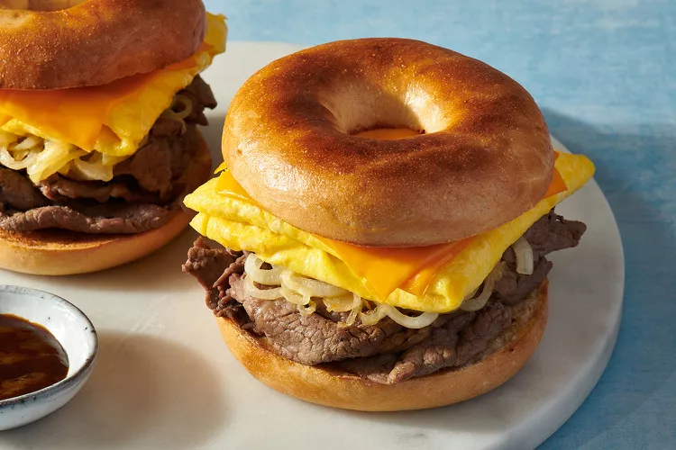

Steak, Egg, and Cheese Bagel

Description
This recipe is a decadent breakfast sandwich; a fluffy omelet topped with
melty cheese and hearty steak and onions. This recipe is for two sandwiches,
but you can easily cut the recipe in half if you’re making this for one, or
double up for the whole family.
Ingredients
- 2 ounces (4 tablespoons) unsalted butter, divided
- 1 small onion, thinly sliced
- 1/2 pound shaved steak
- 1 tablespoon Worcestershire sauce
- 2 teaspoon garlic powder
- 1 teaspoons salt, divided
- 1/2 teaspoon freshly ground black pepper
- 2 plain bagels, or flavor of choice
- 4 large eggs
- 4 slices American cheese
- Steak sauce, optional
Steps
- Gather the ingredients
- Melt 1 tablespoon of the butter in a medium, nonstick skillet over medium heat. Add the onion and sauté until just softened and lightly browned.
- Meanwhile, toss the steak with the Worcestershire sauce, garlic powder, 1/2 teaspoon of salt and the black pepper.
- Transfer the onion to a plate. Increase the heat to high and add the steak to the pan in one even layer. Cook, without stirring, until the steak is browned, about 2 minutes. Continue to stir until the steak is completely cooked through. Transfer the steak to the plate with the onion. Cover to keep warm.
- Toast the bagels, then spread 1 tablespoon of the butter over the 4 halves.
- Melt the remaining 2 tablespoons of the butter in the pan over low heat. Add half of the beaten eggs, and 1/4 teaspoon of salt. Cook, gently stirring with a rubber spatula to expose the raw egg to the bottom of the pan to create an omelet.
- Once the omelet is cooked through, fold it in half with the rubber spatula.
- Then, fold the omelet in half once more and top with 2 slices of the cheese. Repeat with the remaining 2 eggs, 1/4 teaspoon salt, and 2 slices of cheese.
- Divide the steak and onion between 2 of the bagel halves. Top each with the eggs and cheese, then cover with the remaining bagel halves. Serve with steak sauce for dipping or spooning over the top, if desired.